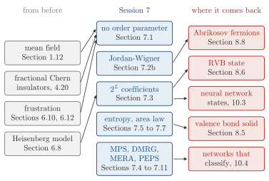

Advanced Quantum Materials 2027 · All lectures · Lecture notes
Session 7. Quantum Many-Body Entanglement and Tensor Networks
Video lecture · Landscape lecture · session7.ipynb · PDF of the notes
In this session we need three things from before. The first is the general interacting Hamiltonian of Section 1.12, together with the mean-field method that we used on it from Session 1 on. The second is the Heisenberg model (6.5), which we obtained in Section 6.8 as the strong-coupling limit of the Hubbard model (1.7). The third is frustration, the geometric one of Section 6.10 and the one that comes from the Kitaev interaction of Section 6.12. Both give magnets where the local moments do not order. An example of the geometric case is herbertsmithite, where the moments sit on a kagome lattice and stay disordered even at zero temperature.
This kind of magnet is a quantum spin liquid. In contrast with a ferromagnet or an antiferromagnet, it does not break time-reversal symmetry. Its spins keep fluctuating locally down to zero temperature, and the ground state is one large entangled object and not a pattern of arrows. Mean-field theory looks for an order parameter that breaks a symmetry, such as a magnetization, a charge imbalance or a pairing amplitude. A quantum spin liquid has none of these, so the self-consistent calculation converges to zero, and this tells us nothing about the true ground state. The same problem appears for the fractional Chern insulators of Section 4.20, where the interactions are too strong for any effective single-particle model.
In this session we will build a tool that works directly in this regime and does not assume that a symmetry is broken. This tool is tensor networks, and in particular matrix product states (MPS). First, we will see that fermionic and spin Hamiltonians describe the same physics in two languages, and that the Jordan-Wigner transformation of Section 7.2b links them. Then we will see that the real problem is not to diagonalize a huge matrix but to store a many-body wave function at all, in Section 7.3. To see when this storage is possible, we will use the entanglement entropy of Section 7.5 and the area law of Section 7.7, and this is the main part of the session. At the end we will see how DMRG finds the ground state, in Section 7.10, and which networks go beyond MPS, in Section 7.11. These methods give the best quantitative evidence for spin liquid physics on the triangular and kagome lattices.

- In Session 8 the singlet of two spins becomes the resonating valence bond state of a frustrated lattice, in Section 8.6.
- In Section 10.3 neural network quantum states are a second answer to the same storage problem of \(2^L\) coefficients.
- In Section 10.4 the same MPS, MERA and PEPS are used as machine-learning classifiers.